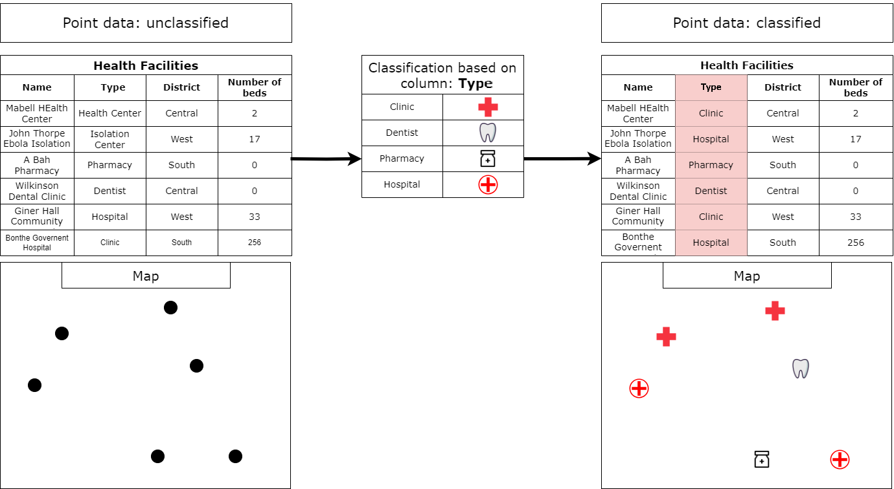
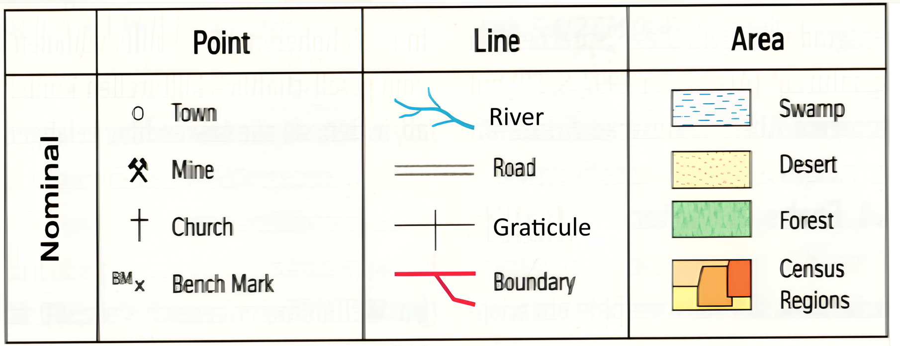
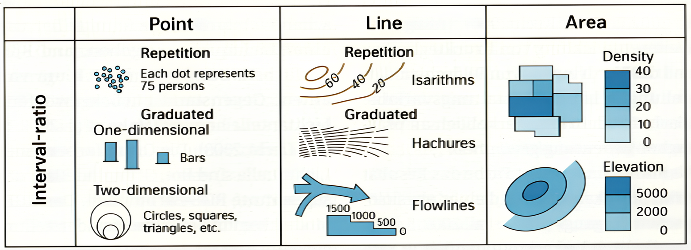
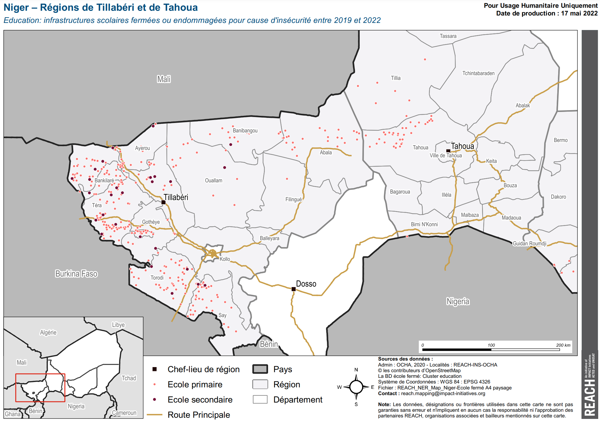
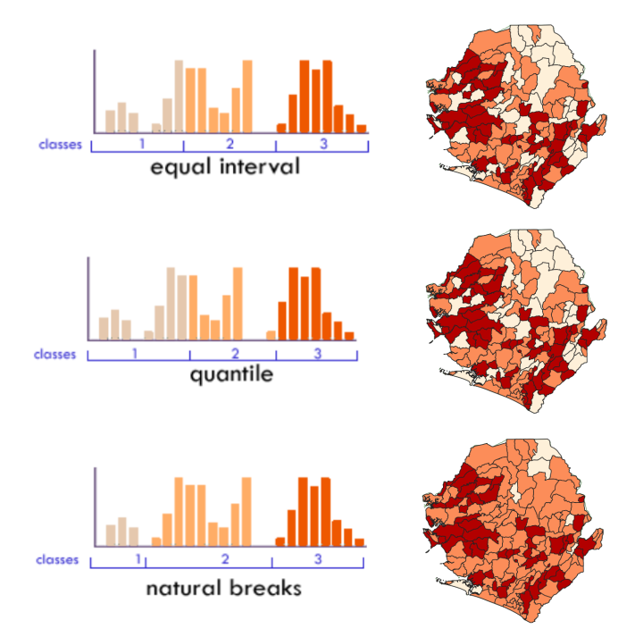
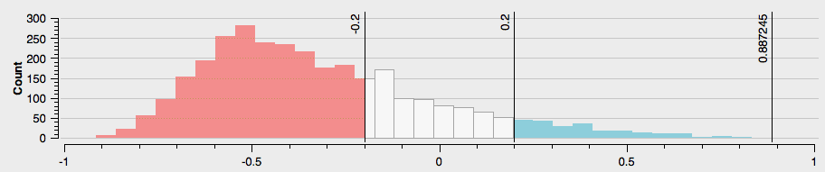

3.3. Geodata Classification#
Spatial data classification in GIS involves categorising geographic information into distinct groups or classes based on shared characteristics or attributes. Each class can be assigned a distinct symbol or colour. This process enhances the organization and interpretation of spatial data.
The attributes of geodata are stored in a specific column within the attribute table. Essentially, we choose a column containing the specific characteristics of interest, allowing QGIS to group the data based on these selected attributes.
{kind=link}

Fig. 3.8 Basic classification. Source: HeiGIT#
3.3.1. Nominal, Ordinal and Metric scales#
In geographic data classification, nominal, ordinal, and metric scales are used to categorize and measure spatial features based on different levels of precision and hierarchy:
The nominal scale (categorical data) is the simplest form of measurement where features are grouped into distinct categories based on qualitative attributes. These categories don’t have any inherent order or ranking. They don’t have any numerical significance: Values or labels are just names or identifiers (in some cases landcover classes can be identified with numbers).
Examples: Land cover classes, vegetation types, soil types, amenity type (hospital, church, school, etc.)

Fig. 3.9 Examples for nominal data and their representation (Source: Dickmann (2018) Kartographie, Westermann)#
The ordinal scale (ranked data) involves categorizing data, but in this case, the categories have a meaningful order or rank. However, the intervals between the ranks are not necessarily equal or known. Rank order is important: Features can be ranked or ordered from lowest to highest, but the actual difference between ranks isn’t measured. You can compare and rank data (i.e., which feature is ranked higher or lower).
Examples: Land suitability, hierarchical road network, population size classes, vulnerability classes (e.g. for administrative units)

Fig. 3.10 Examples for ordinal data and their representation (Source: Dickmann (2018) Kartographie, Westermann)#
The metric scale (quantitative data) deals with data that have both order and exact differences between values. Data is represented with precise numerical values and the differences between values are consistent across the scale. Metric data can be further divided into:
Interval scale: Numerical data where the difference between values is meaningful, but there is no true zero point (e.g., temperature in Celsius).
Ratio scale: Numerical data where both differences and ratios are meaningful, and there is a true zero point (e.g., distance, area).
Examples: Elevation data, distance, area, population data

Fig. 3.11 Examples for metric data and their representation (Source: Dickmann (2018) Kartographie, Westermann)#
{kind=link}
{kind=link}
Depending on the type of scale, you will use different methods of classification. Below, we will go over the different types of classification that are available in QGIS, and when to use them for which data. We will also go over some scenarios you might come across in your GIS career.
3.3.2. Single symbol classification#
By default, QGIS visualises all layers in the Single symbol setting. This means all the features of a layer
are visualised the same. In this setting, you can change many parameters like colour or opacity but you can not classify the data into multiple groups!
Single Symbol classification is useful when you have a simple dataset. For example, you load a polygon layer with the administrative boundaries of a region, and a point layer with the major cities. In this case, you can choose single symbol classification and adjust the symbol for the each layer.
How to: Single symbol classification
To adjust the style of a layer…
Right-click on your layer.
Click on
Symbology.Confirm that the layer setting is on
Single Symbol.Select the colour of your choice in the drop-down menu. For more colour options select in the drop-down menu
Choose Color.Optional: You can adjust the opacity/transparency of the layer. This can be very useful when you want to show multiple overlapping layers.
Optional: Here you can set the unit type. This is useful when you want to visualise points in a certain size, for example.
Optional: Here you can find standard and previously used styles quickly.
Click
Applyto put your adjustment into effect.Click
OKto close the window.

Fig. 3.12 Adjust the style of a layer.#
3.3.3. Categorised classification#
Categorised classification in QGIS groups spatial data into distinct categories based on specific attributes.
This classification organises the features into categories based specific values in the attribute table. By specifying a symbol to each category, you can facilitate the interpretation of geospatial information on your map for clearer insights.
{kind=link}

Fig. 3.13 Niger – Régions de Tillabéri et de Tahoua Education: infrastructures scolaires fermées ou endommagées pour cause d’insécurité entre 2019 et 2022 (Source: REACH)#
In the map above, the main roads have been assigned a single symbol. The schools have been classified into two categories: primary school (fr.: école primaire) and secondary school (fr.: école secondaire).
Categorised classification is usually used for nominal and ordinal scaled data.
Data Scale |
Definition |
Example |
Typical Data Format |
|---|---|---|---|
Nominal Scale |
Categories without inherent order or ranking |
Land cover types, districts, livelihood zones |
Text (“Desert”) or Integer (5) |
Ordinal Scale |
Categories with a meaningful order or ranking |
Ranks (e.g., low, medium) |
Text (“high”) or Integer (5) |

Fig. 3.14 Example for a map using categorised classification.#
How To: Categorised classificatation
To classify data in categories…
Right-click on your layer.
Click on
Symbology.Click on
Categorized.In the
Valuedropdown menu, select the column based on which you want to categorise your data.Further down the window click on
Classify. Now you should see all unique values or attributes of the selected column inValue. To add or delete single values use the-and+buttons.Optional: In the
Symboldropdown menu, you can select the colours and symbols you want to useOptional: In the
Color rampdropdown menu, you can specify the range of colours you want to useOptional: You can open the panel
Layer Renderingon the button of the window. Here you can adjust the opacity/transparency of the layer.Click
Applyto put your adjustment into effect.Click
OKto close the window.
3.3.4. Graduated classification#
Graduated classification in GIS involves categorising spatial data into classes or ranges based on a progression of values. This method is particularly useful for visualising quantitative data, allowing for the differentiation of intensity, density, or magnitude across a spectrum, facilitating a nuanced representation of geographic phenomena.

Fig. 3.15 REACH, Ukraine, IDP Collective Site Monitoring Map, Actives, July 2024 (Source: Reach)#
In Fig. 3.15, each hexagonal cell holds a value for “Number of sites per 150km²” ranging from 1 to 91. The cells have been organised into 5 categories, making it easy to distinguish between the different values in each cell. By keeping the amount of classes to a minimum, the reader can read and understand the map quicker.
Graduated classification is usually used for quantitative data that is interval or ratio scaled.
Data Scale |
Definition |
Example |
Typical Data Format |
|---|---|---|---|
Interval Scale |
Equal intervals between values, no true zero point |
Temperature (Celsius) |
Float (44.5 Degree) |
Ratio Scale |
Equal intervals with a true zero point |
Population, Length, Number of trees |
Integer (5 Trees) or Float (12.5 km of Road) |
To classify quantitative data there are many methods how to set up the classes. There is no single best way to select a method or to decide how many classes you like to use. It all comes down to what you want to show.
Tip
A good range for number of classes is 3 to 7. Do not use more than 9 classes, as it becomes difficult to distinguish between the classes, making the map harder to understand.
Take the example below. You see a histogram of the district population. That means we have a dataset with districts and how many people living in each district. Just based on the histogram we can make a few general statements.
There are no districts with no or zero population
There are just a few districts with very low population
It seems that there are three general groups of districts

However, if we want to show which districts have a higher population than others on a map, we need to classify the districts.
There are seven ways in QGIS to split quantitative data into classes. The four most important ones are: Equal intervals, Quantile, Natural breaks, Manual. Let’s have a look at how the classes of the district population would look like if we split the data into three classes using these methods.
{kind=link}

Fig. 3.17 Different classifications. Source: HeiGIT (adapted from Axis Maps)#
Equal Interval classification divides data into uniform size classes, such as 0-10, 10-20, 20-30, and so on. It is effective for evenly distributed data across the entire range. However, caution is advised when data is skewed or has significant outliers, as this may result in empty classes. The population data used here, lacking large outliers, is suitable for Equal Interval classification.
Quantiles classification ensures an equal number of observations in each class, creating visually appealing maps. However, it may result in classes with significantly different numerical ranges, and in some cases, similar rates may be separated while different rates are grouped together. It’s advisable to use a histogram to assess potential issues. In the district population example, the quantile classification produced a questionable break, combining a portion of the third cluster with class 2 despite its closer numerical proximity to other observations in class 3.
Natural Breaks is an optimal classification method that aims to minimize within-class variance and maximize between-class differences for a given number of classes. However, it produces a unique classification solution for each dataset, which can be a drawback when making comparisons across maps, such as in a series or atlas. In such cases, a consistent classification scheme applied across all maps might be preferable.
Manual classification allows users to set one or all of the class breaks based on specific needs. This approach is useful when certain break points need to be predetermined, such as aligning with the mean or maintaining consistency across a series of maps. Manual classification is recommended when other methods provide a good solution but may benefit from slight adjustments to better suit specific requirements or visualisation methods.
Logarithmic scale classification is employed when the data spans multiple orders of magnitude, and a linear scale may not effectively represent the variations. This scale applies logarithmic transformation to the data, compressing larger values while expanding smaller ones. It is useful for visualising data with exponential growth or decay. However, interpreting values on a logarithmic scale may require a nuanced understanding. Consider using a logarithmic scale when there is a wide range of values, and a linear scale may obscure important patterns or trends.
Pretty Breaks is a classification method designed to create visually appealing and easily interpretable maps. This approach seeks to generate class breaks that align with “round” numbers, making the map more intuitive for viewers. Pretty Breaks is particularly useful when communicating complex spatial data to a broad audience, as it enhances the clarity and understandability of the map. Keep in mind that the choice of ‘pretty’ breaks may depend on the specific context and the preferences of the intended audience.
Standard Deviation classification is a method that determines class breaks based on the standard deviation of the data values. This approach organizes data into classes by considering the distribution of values around the mean. Each class represents a certain number of standard deviations from the mean, providing a statistical basis for categorising data. Standard Deviation classification is effective when wanting to highlight variability within the dataset. However, it’s important to consider the nature of the data distribution and whether this method aligns with the analytical goals of the map.
How To: Graduated classification in QGIS
Setting up a graduated classification in QGIS is similar to setting up a categorised classification. However, unlike the categorised classification, here you have to decide on how many classes and which method of graduation you want to use.
To classify data in classes…
Right-click on your layer.
Click on
Symbology.Click on
Graduated.In the
Valuedropdown menu select the column based on which you want to classify your data.Downright select the number of classes you want to use.
Under
Modeselect the classification method you want to use e.g. Equal count (Quantile).Click on
Classify. Now you should see all classes and the distribution of values. To add or delete classes use the-and+buttons.Optional: Click on
Histogram->Load Values. Now you can see the exact distribution of values over the classes. This is very practical to decide on a classification method. You can also check the mean value and standard deviation.
{kind=link}

Optional: In the
Symboldropdown menu you can select the colours and symbols you want to use.Optional: In the
Color rampdropdown menu you can specify the range of colours you want to use. To see all color ramps click on the down arrow of theColor ramp->All Color Ramps.Optional: Under
Legend Formatyou can adjust how precise the range of the classes will be displayed in the legend. Usually, it is practical to not use too complicated numbers in the legend.Optional: You can open the panel
Layer Renderingon the button of the window. Here you can adjust the opacity/transparency of the layer.Click
Applyto put your adjustment into effect.Click
OKto close the window.

Fig. 3.19 Graduated classification in QGIS 3.36.#